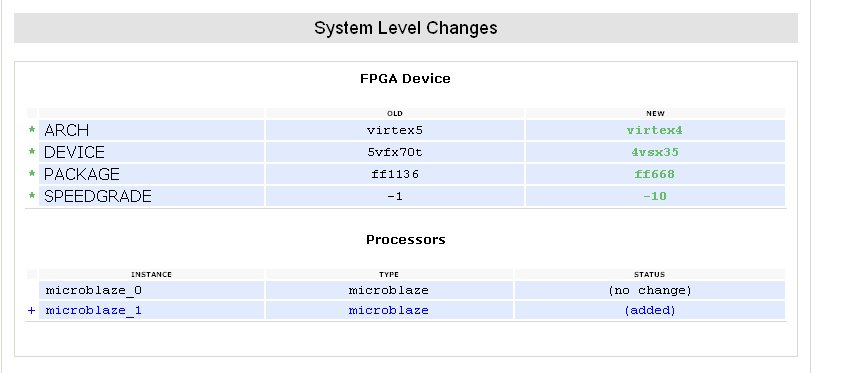
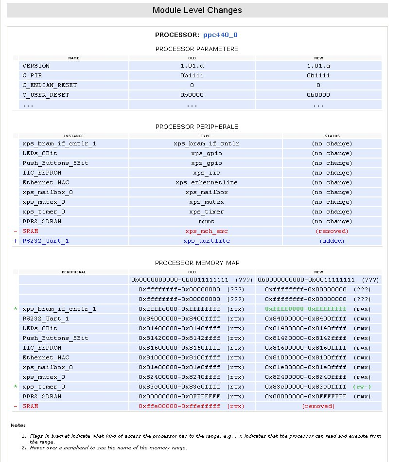

Xilinx embedded software
The Hardware Design Changes page appears when you click the Show Hardware Design Differences button in the Hardware Specification File dialog box.
This page shows a high-level summary of the most recent changes your hardware design went through (or is about to go through). Your design is assumed to have changes any time the hardware specification file for your workspace changes.
The System Level Changes section displays FPGA device or processor changes found at the system level.


The Module Level Changes section also lists new modules, including processors, found in your system. For each new processor, the section summarizes some processor parameters, the peripheral set of the processor, and the processor memory map. For other modules, the section lists the module name, version, and a few parameters.
Any time the hardware specification file changes, SDK automatically makes changes in the workspace to adapt it to the new hardware design. It might provide recommendations on other changes you can make. Beyond these automatic and recommended changes, there may be other changes that are required at the application level to match the new hardware. The Hardware Design Changes Summary page provides the requisite information in a concise form so you can easily view the retargeting flow.

Auto-synchronization of software projects
Re-targeting software projects

Copyright © 1995-2009 Xilinx, Inc. All rights reserved.